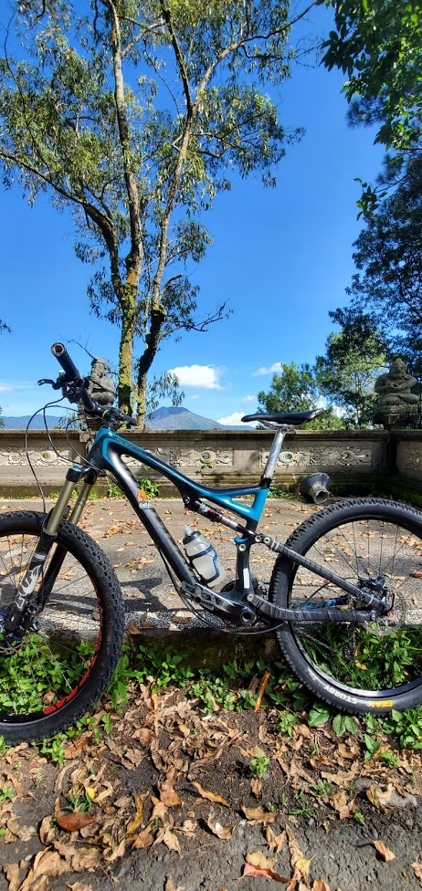

Hi!
I'm Mr. F. I'm a secondary school teacher of computer science. I'm happy to call myself a geek (many others have!). I love my subject and think it is one of the most important subjects you can learn today! It's not just about sitting in front of a computer, it's not just programming, it's not aobut never seeing the outside world! Computer science covers so many different topics and links in with so many of the other subjects we learn and aspects of our daily lives.
Teaching
I've been teaching for over 10 years with 7 years in the UK and 3 in China. I love teaching, it's been the best job that I've had by far despite how difficult it can be at times. Sure teaching has its ups and downs but I wouldn't give it up (I'd love to make changes to exam specs and governemtn policies..but that's for another time!).
Learning
Learning never stops! Or at least it shouldn't! I love to keep learning...sometimes it's a problem as I take on too many things at once. I love to learn for myself and for my job. You can't teach a technolgoy based subject if you don't keep up with the latest trends and developments can you? From the teaching point of view there are always changes in methods and skills and you need to keep up with these too.
Some of the things I'm trying to do at the moment include...
- working towards becoming an ISTE Certified Educator
- learning about django
- brushing up my HTML and CSS
- trying to (re)learn C#
- about to try to learn macOS/iOS app development
Other stuff...
Other than computer science I like to do other things. Some of this is still super geeky!
- Mountain biking 
- Rock climbing
- Electronics
- Coding